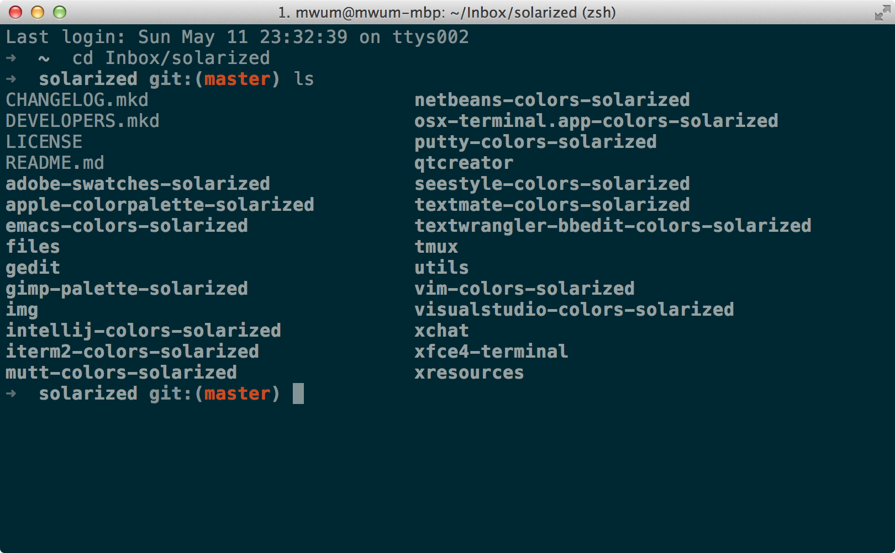
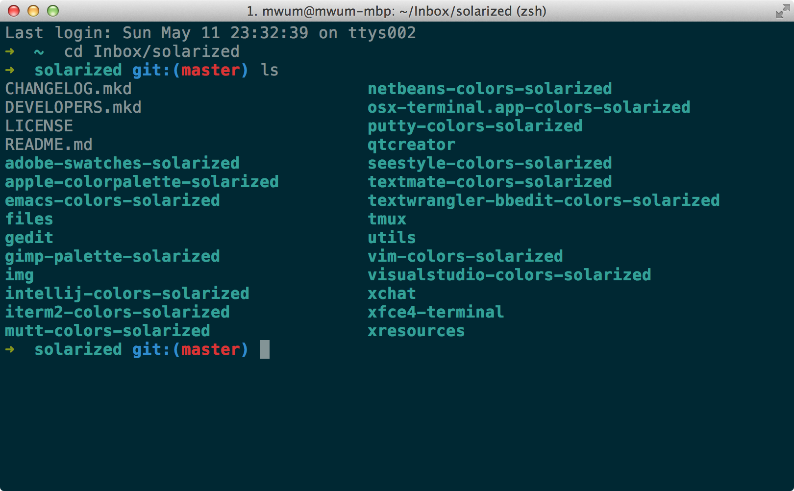

Mac 下配置终端环境 iTerm2 + Zsh + Oh My Zsh + tmux
iTerm2
iTerm 2 is a terminal emulator for Mac OS X that does amazing things.
iTerm2 是一个终端模拟器，官方网站：http://www.iterm2.com/
更改配色方案为 Solarized
注意：iTerm2 3.0.12（应该比这更早）已经内置 Solarized 的配色方案了，直接在 iTerm2 - Preferences - Profiles - Colors 里面配置就好了
Solarized 的主页：http://ethanschoonover.com/solarized
直接去主页下载或者使用 Git
git clone git://github.com/altercation/solarized.git
然后打开 solarized/iterm2-colors-solarized/ 双击里面的文件
遇到的问题
终端灰蒙蒙的，就像下面这样

下面我们来回到彩色世界：
依次打开 iTerm2 - Preferences - Profiles - Text - Text Rendering，将 Draw bold text in bright colors 前面的勾去掉
彩色的世界就回来了

有意思的配置
-
快捷键呼出
Preferences - Keys - Hotkey - Hotkey toggles a dedicated window with profile
把它设置成 Hotkey Window，按快捷键之后 Hotkey Window 会从屏幕上面折叠下来 -
菜单栏中的 Window 还有一些有趣的东西，比如保存读取窗口快照
-
Preferences - Profiles - Terminal - Terminal Emulation - Report Terminal Type
将其中的 xterm 改成 xterm-256color，比如在 Vim 显示一些配色方案会好很多 -
复用上个会话的目录
Preferences - Profiles - Working Directory - Reuse previous session’s directory
快捷键
⌘ + Click：可以打开文件，文件夹和链接⌘ + n：新建窗口⌘ + t：新建标签页⌘ + w：关闭当前页⌘ + 数字&⌘ + 方向键：切换标签页⌥⌘ + 数字：切换窗口⌘ + enter：切换全屏⌘ + d：左右分屏⇧⌘ + d：上下分屏⌘ + ;：自动补全历史记录⇧⌘ + h：自动补全剪贴板历史⌥⌘ + e：查找所有来定位某个标签页⌘ + r&⌃ + l：清屏⌘ + /：显示光标位置⌥⌘ + b：历史回放⌘ + f：查找，然后用tab和⇧ + tab可以向右和向左补全，补全之后的内容会被自动复制，还可以用⌥ + enter将查找结果输入终端- 选中即复制，鼠标中键粘贴
很多快捷键都是通用的，和 Emace 等都是一样的
⌃ + u：清空当前行⌃ + a：移动到行首⌃ + e：移动到行尾⌃ + f：向前移动⌃ + b：向后移动⌃ + p：上一条命令⌃ + n：下一条命令⌃ + r：搜索历史命令⌃ + y：召回最近用命令删除的文字⌃ + h：删除光标之前的字符⌃ + d：删除光标所指的字符⌃ + w：删除光标之前的单词⌃ + k：删除从光标到行尾的内容⌃ + t：交换光标和之前的字符
还有鼠标和触摸板控制
Preferences - Pointer
Zsh
Mac 系统自带了 Zsh, 一般不是最新版，如果需要最新版可通过 Homebrew 来安装
brew install zsh
可通过 zsh --version 命令查看 Zsh 的版本
使用 echo $ZSH_VERSION 命令查看当前使用的 Zsh 版本
修改默认 Shell
-
在 /etc/shells 文件中加入如下一行
/usr/local/bin/zsh -
然后运行命令
chsh -s /usr/local/bin/zsh
Oh My Zsh
Oh My Zsh 用来管理 Zsh 配置的，自带了好用的基本配置，基本都是 Zsh 的标配了，你不用再一步步重新配置 Zsh ，节约你的宝贵时间
项目主页：https://github.com/robbyrussell/oh-my-zsh
安装方法见主页，很简单就不说了，下面说说一些常用的好用的功能：
配置文件在 ~/.zshrc
-
连续按 tab, 能直接选择文件及文件夹，还可以使用
⌃ + n/p/f/b来选择 -
直接输入文件名打开文件，可指定不同的后缀名用不同的程序打开
在配置文件中写入alias -s md=mvim, 表明在命令行中输入 md 后缀的文件名，会用 mvim 打开
又例如：alias -s gz="tar -xzvf", 自动解压后缀为 gz 的压缩包
一些常用的压缩方式如下：alias -s tar="tar -xvf" alias -s gz="tar -xzvf" alias -s tgz="tar -xzvf" alias -s bz2="tar -xjvf" alias -s zip="unzip" -
kill <tab>会自动列出进程，或者kill nginx -
支持递归，例如
ls **/*列出当前目录下所有文件及目录，并递归目录 -
使
man结果高亮显示，在配置文件中写入如下内容：# man page highlight export LESS_TERMCAP_mb=$'\E[01;31m' # begin blinking export LESS_TERMCAP_md=$'\E[01;38;5;74m' # begin bold export LESS_TERMCAP_me=$'\E[0m' # end mode export LESS_TERMCAP_se=$'\E[0m' # end standout-mode export LESS_TERMCAP_so=$'\E[38;5;246m' # begin standout-mode - info box export LESS_TERMCAP_ue=$'\E[0m' # end underline export LESS_TERMCAP_us=$'\E[04;38;5;146m' # begin underline
Oh My Zsh 本身自带了很多插件，不过基本都没有启用，插件目录 ~/.oh-my-zsh/plugins
例如启用插件 git, autojump osx, 需要在配置文件中加入如下内容
plugins=(git autojump osx)
-
osx 插件
man-preview通过 preview 程序查看一个命令的手册quick-look快速预览文件pfd返回当前 Finder 打开的文件夹的路径cdf切换到当前 Finder 所在的目录
-
autojump 插件
需要先安装 autojump
brew install autojump使用方法：
j 目录名或目录名的一部分跳转到最多访问的目录
-
zsh-autosuggestions 插件：https://github.com/zsh-users/zsh-autosuggestions
Fish 类的自动建议插件
自动建议的字体颜色可能和你终端的颜色相近，你可以将其改成其它的，比如设置为 blue
export ZSH_AUTOSUGGEST_HIGHLIGHT_STYLE='fg=blue'
tmux
一个终端复用软件，可将终端方案化
安装
brew install tmux
配置
mvim ~/.tmux.conf
并不喜欢反人类的全键盘式操作，而且也没有特别吸引我的点，所以基本不使用
经常连接服务器的人用起来应该挺好用的
比如，在一个窗口中分隔成多个终端同时运行不同的命令
使用 SSH 的时候，在网络不稳定的情况下，可保存工作环境
在网络不好的环境下，还可以尝试使用 Mosh 来代替 SSH